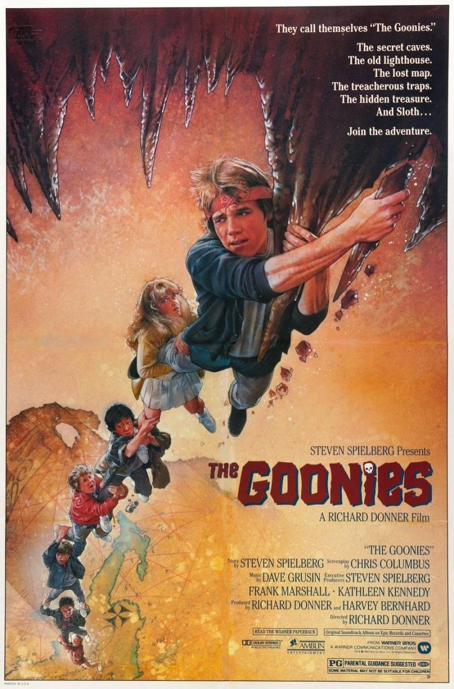

Los Goonies
Director: Richard Donner
Fecha de Estreno: 24 de julio de 1985
La película relata el viaje de un grupo de niños amigos en busca de un tesoro perdido, y se ha convertido en una de las películas de culto de los años 1980.
A continuación se mostraran una serie de películas similares que le pueden interesar.
Director: Richard Donner
Fecha de Estreno: 24 de julio de 1985
La película relata el viaje de un grupo de niños amigos en busca de un tesoro perdido, y se ha convertido en una de las películas de culto de los años 1980.
Director: Ron Howard
Fecha de Estreno: 1 de diciembre de 2000
Es una película estadounidense de fantasía y comedia del año 2000 producida por Universal Pictures e Imagine Entertainment, basada en el cuento navideño del mismo nombre escrito por Dr. Seuss en 1957.
Director: Steven Spielberg
Fecha de Estreno: 6 de diciembre de 1982
E.T., el extraterrestre es una película estadounidense de ciencia ficción de 1982 dirigida por Steven Spielberg, escrita por Melissa Mathison, protagonizada por Henry Thomas y distribuida por Universal Pictures. La cinta está basada en un amigo imaginario del propio director, creado tras el divorcio de sus padres.
Director: Henry Selick
Fecha de Estreno: 2 de diciembre de 1994
Es una película de fantasía oscura animada en volumen estadounidense de 1993, dirigida por Henry Selick, producida y concebida por Tim Burton. Cuenta la historia de Jack Skellington, el Rey de la "Ciudad de Halloween", que tropieza a través de un portal a la "Ciudad de la Navidad" y decide celebrar la fiesta